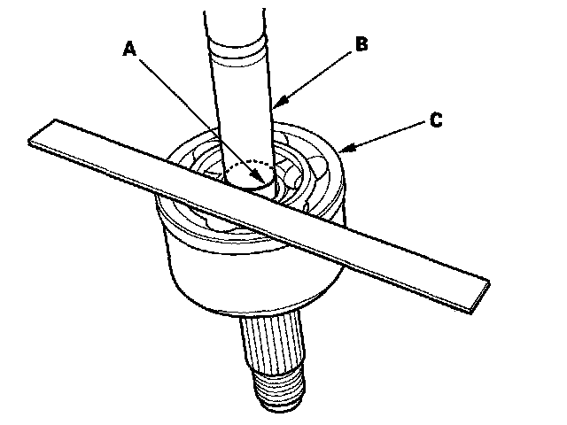

Front Driveshaft Disassembly
Front Driveshaft DisassemblySpecial Tools Required
Threaded adapter, 26 x 1.5 mm 07XAC-001030A
Inboard Joint Side
1. Remove the set ring (A) from the inboard joint.
2. Remove the boot bands. Be careful not to damage the boot and dynamic damper.
3. Make a mark (A) on each roller (B) and inboard joint (C) to identify the locations of rollers and grooves in the inboard joint. Then remove and place the inboard joint on a shop towel (D). Be careful not to drop the rollers when separating them from the inboard joint.
4. Make marks (A) on the rollers (B) and spider (C) to identify the locations of the rollers on the spider, then remove the rollers.
5. Remove the circlip (D).
6. Mark the spider and driveshaft (E) to identify the position of the spider on the shaft.
7. Remove the spider.
8. Wrap the splines on the driveshaft with vinyl tape (A) to prevent damage to the boot.
9. Remove the inboard boot. Be careful not to damage the boot.
10. Remove the vinyl tape.
Outboard Joint Side
1. Remove the boot bands. Be careful not to damage the boot and dynamic damper.
2. Slide the outboard boot (A) partially to the inboard joint side. Be careful not to damage the boot.
3. Wipe off the grease to expose the driveshaft and the outboard joint inner race.
4. Make a mark (A) on the driveshaft (B) at the same level as of the outboard joint rim (C).

5. Securely clamp the driveshaft in a bench vise with a shop towel.
6. Remove the outboard joint (A) using the threaded adapter (B) and a commercially available 5/8"-18 UNF slide hammer (C).
7. Remove the driveshaft from the vise.
8. Remove the stop ring (A) from the driveshaft.
9. Wrap the splines on the driveshaft with vinyl tape (A) to prevent damaging the boot.
10. Remove the outboard boot. Be careful not to damage the boot.
11. Remove the vinyl tape.